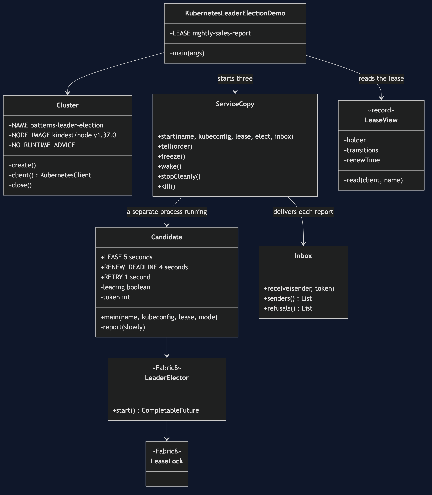
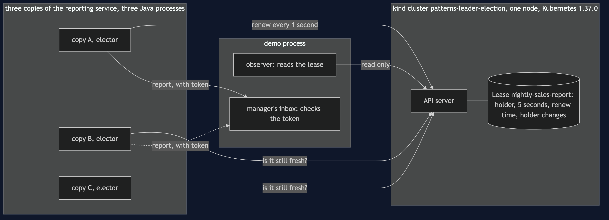
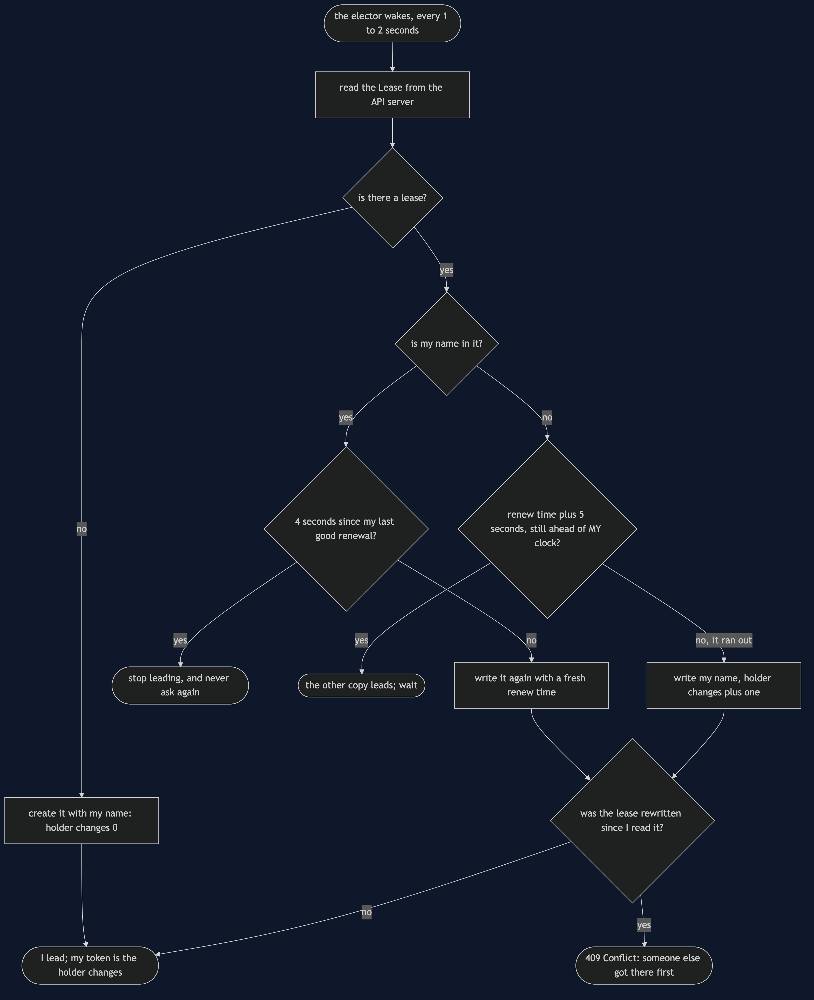
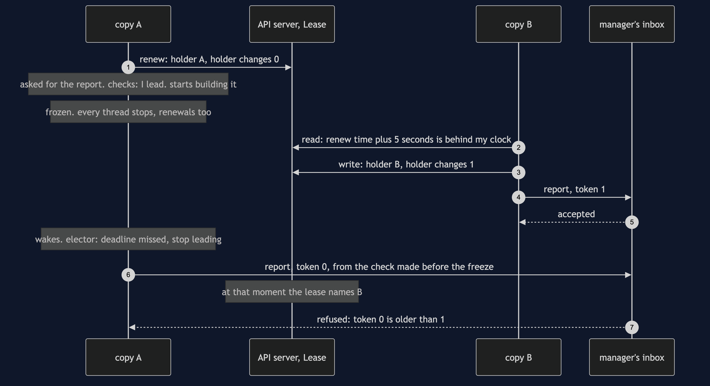
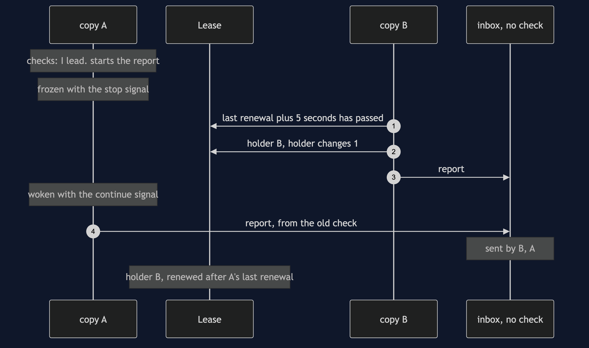
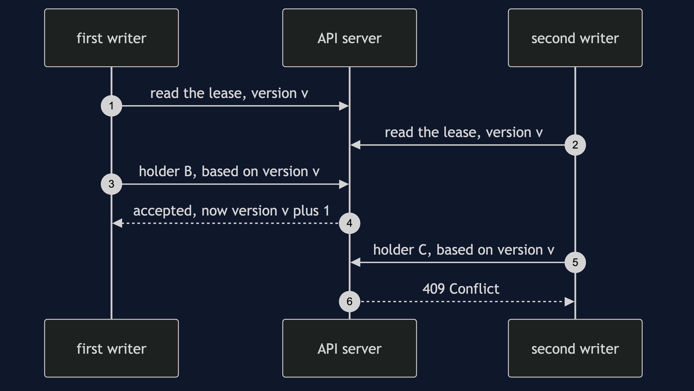
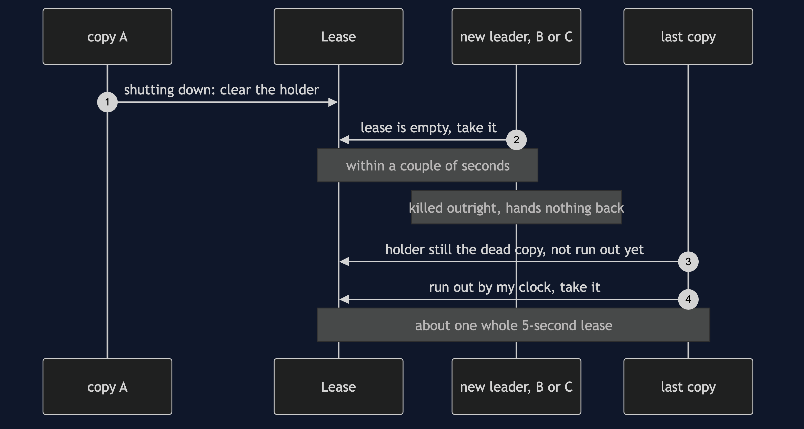
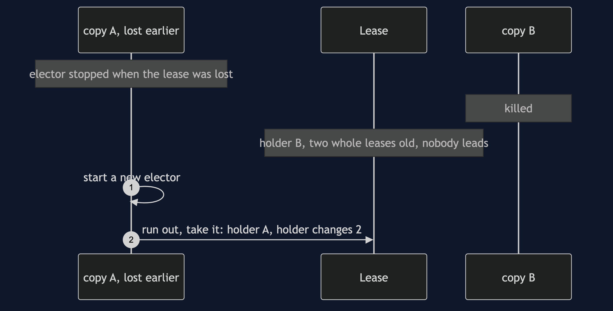

Leader Election with Kubernetes Pattern
src/main/java/com/jk/explore/leaderelectionk8s/
├── KubernetesLeaderElectionDemo.java the six acts
├── Cluster.java creates and deletes a one-node kind cluster
├── Candidate.java one copy of the reporting service, a separate process, with Fabric8's LeaderElector
├── ServiceCopy.java the demo's handle on a copy: order it, freeze it, wake it, stop it, kill it
├── LeaseView.java reads the Lease object: holder, holder changes, last renewal
├── Inbox.java the manager's inbox; can check the fencing token
├── Poll.java every wait is a question asked until the answer is yes
└── Shell.java runs kind and killOn a real Kubernetes API server, a lease is only a record. The server never takes it away from anyone. It refuses a write made from an old version of the record, and that is all it enforces. Whether the lease has run out is decided by each copy, with its own clock, so a leader that freezes past its lease wakes up still believing it leads.
This project needs a container runtime and kind. Docker Desktop, or anything Docker-compatible, must be running, and kind must be installed (brew install kind on a Mac). The demo creates a one-node Kubernetes cluster inside the container runtime, uses it, and deletes it at the end. It writes the cluster's address to a private file, never to your own ~/.kube/config, and nothing is left behind. With no runtime, or no kind, the demo prints two sentences saying what to do, and stops, rather than a stack trace. kubectl is not needed.
This project is the real-infrastructure version of the plain-Java Leader Election project in this course. That project kept the lease in one Java object, inside one program, with a clock that moved only when told to. This one runs three copies of the service as three separate Java processes, and they hold a real Kubernetes Lease through Fabric8's LeaderElector, against a real API server.
Run
./gradlew runSix acts, against a real cluster. Every number quoted below, and in every document and slide in this project, comes from this program's own output. Two runs back to back print exactly the same thing.
ONE. Three copies, nobody in charge.
three copies of the reporting service run as 3 separate processes. none of them asks who is in charge.
the nightly sales report is sent by every copy: [A, B, C].
the manager receives it 3 times.
TWO. One holds the lease.
A asks the API server first and is written into the lease. it says: holder A, lasts 5 seconds, holder changes 0.
A renews it every 1 second. B and C ask as often, and each is told the leader is A.
all three are asked to send the report. the report was sent by: [A].
two writes to the lease, both based on the same version of it: the first is accepted, the second refused with 409 Conflict.
that refusal is the only rule the API server enforces. it never takes a lease away by itself.
THREE. The leader stops.
A is shut down cleanly. on its way out, its elector hands the lease back by clearing the holder.
one of B and C took over within a couple of seconds, well inside one 5-second lease.
now the new leader is killed outright. it gets no chance to hand anything back.
the lease went on naming the dead copy until it ran out. the last copy took over after about one whole 5-second lease.
for that time nobody was leading. the others cannot tell a dead leader from a slow one, so they wait.
FOUR. Two who think they lead.
A checks that it leads, and starts building the report. then A freezes, as in a long garbage-collection pause.
every thread in A stops, the one that renews the lease too. the lease runs out, and B takes it.
the lease says: holder B, holder changes 1.
B sends the report. A wakes up, still believing it leads, and sends too. the report was sent by: [B, A].
when A sent, the lease named B, renewed after A's last renewal: yes.
A's elector did tell it the lease was lost, but only once A woke up. A had checked before it froze.
FIVE. Fencing.
the same again, but each report now carries a token: the lease's count of holder changes when that copy took it.
A's token is 0, B's is 1. B sends first. A wakes up and tries to send: refused, token 0 is older than 1.
the report was sent by: [B]. the count only goes up, and the inbox, the thing being written to, checks it.
SIX. The bill.
B is killed. A is still running, but its elector gave up when it lost the lease, and it never asks again.
two whole leases later the lease still names B, and nobody leads. the loser does not rejoin by itself.
A starts a new elector, and leads again with token 2. the usual answer is simpler: a copy that loses the lease exits, and Kubernetes restarts it.
a lease of 5 seconds, renewed every 1: a dead leader goes unnoticed for up to 5 seconds. make it shorter, and one slow moment costs a healthy leader its lease.
the lease runs out by each copy's own clock, measured from a time the holder wrote. clocks that disagree break it.
and all of it needs a Kubernetes API server: this demo ran 1 cluster, with 1 node, for 1 nightly report.A run takes a little over a minute: about thirty seconds to create the cluster, and the rest is the acts themselves, because a lease has to be allowed to run out. The first run also downloads the kind node image, about 1 GB.
Two things in the third act depend on timing that the cluster and the elector choose: which of B and C takes over first, and exactly how long each handover takes. So the demo names neither copy and prints no seconds. It prints a description — "within a couple of seconds", "about one whole lease" — chosen from the measured time, and the tests check the measured time against a range.
Test
./gradlew test3 test classes, 10 test methods. PlainPartsTest needs nothing installed: the inbox with and without its fencing check, the lease arithmetic, and the timings Fabric8 will accept. RealLeaseTest creates one kind cluster for the whole class and deletes it at the end: the first copy is written into the lease and the others are told so, the API server refuses a second write based on the same version with 409 Conflict, a frozen leader loses the lease and is told only when it wakes, and a clean shutdown hands the lease over in less than one lease length. DemoRunsTest runs the demo, which makes and deletes its own cluster, and asserts every figure the documents quote.
There is no Thread.sleep anywhere under src/test. Every wait is a poll on something real — what the lease says, what a copy has printed — with a sixty-second limit that fails the test rather than hanging it. The tests that need a cluster are skipped when there is no container runtime or no kind; the rest still run. The whole suite takes about two and a half minutes, most of it creating the two clusters, one after the other.
What the simulation got right, and what it left out
This is the reason this project exists, so it comes before anything else.
What the plain-Java Leader Election project got right. All of the shape. With no election, every copy sends the nightly sales report and the manager gets it three times. With a lease, one copy holds it and only that copy sends. A leader that dies leaves everyone waiting until its lease runs out, because nobody can tell a dead leader from a slow one. A leader that pauses for longer than its lease wakes up still believing it leads, and two copies send. And the answer is a fencing token that only goes up, checked by the thing being written to. Every one of those lessons holds against a real API server, and this project's acts one, three, four and five reproduce them: [A, B, C], then [A], then [B, A], then [B] with token 0 refused because it is older than 1.
What it left out, first, and the headline find: nothing on the server takes the lease away. In the simulation, the lease store knew the time and decided for itself when a lease had expired. A Kubernetes Lease is only a record with a holder's name, a length in seconds and the time it was last renewed. The API server stores it and never looks at the clock. Each waiting copy reads the record, adds the length to the last renewal time, compares the answer with its own clock, and decides for itself. The fourth act shows what that means. A is frozen with every thread stopped, as a long garbage-collection pause would stop it, after it has checked that it leads. B takes the lease. When A wakes and sends the report, the lease names B and has been renewed by B since A last renewed it — the lease's own record proves A was no longer the leader — and the report is sent twice anyway: [B, A]. A's elector did notice, but only after A woke up, by its own stopwatch, and the work was already on its way.
Second: the one thing the server does enforce is a version check. Every object in Kubernetes carries a version number that changes on every write. A write that says which version it was based on is refused if that is no longer the current one — Kubernetes calls the refusal 409 Conflict. The second act makes two writes from one version: the first is accepted, the second refused. That is what stops two copies both winning the same moment. The simulation got the same safety for free by being one program with one thread; here it is a real rule, enforced by a real server, and a frozen leader waking up with an old version in its hand is refused by it too.
Third: what a lost lease does to the loser — it leaves the race for good. In the simulation a node that lost the lease could simply ask again. Fabric8's LeaderElector cannot be restarted: when it loses the lease it tells the copy, and stops. The sixth act kills B while A, the earlier loser, is still running; two whole leases later the lease still names B and nobody leads. A leads again only when it starts a brand-new elector, with token 2. In a Kubernetes deployment the usual answer is simpler: a copy that loses the lease exits, and Kubernetes starts it again.
Fourth: stopping cleanly is not the same as dying. The simulation had one way to lose a leader. Here there are two, and the third act shows both. A copy shut down cleanly hands the lease back on its way out, clearing the holder, and another copy takes over within a couple of seconds. A copy killed outright hands nothing back, and the lease goes on naming the dead copy for about one whole 5-second lease.
What the simulation had that the real one does not. A clock that moved only when told to, so every gap was an exact number of seconds. Here time is real: which copy wins a race, and how long a handover takes, change a little from run to run, and the demo describes them rather than counting them. And the simulation's expiry was judged by one clock. Here each copy judges with its own, against a time the holder wrote with its clock, so copies on machines whose clocks disagree can take over too early. On one laptop all the clocks agree, so the demo cannot show that; it can only say it.
Technologies and versions
| What | Version | Why it is here |
|---|---|---|
| Java | 21 | The repository standard, via the Gradle toolchain block |
| Gradle | 9.2.1 | The wrapper in this directory; no separate install needed |
| Kubernetes | 1.37.0 | The API server that stores the Lease, as the kind node image kindest/node:v1.37.0, pinned by digest |
| kind | 0.33.0 | Runs the one-node cluster inside the container runtime. Must be installed |
| Fabric8 Kubernetes client | 8.0.0 | io.fabric8:kubernetes-client, the newest release; its LeaderElector and LeaseLock run the election |
| Fabric8 JDK HTTP client | 8.0.0 | io.fabric8:kubernetes-httpclient-jdk, used in place of the default Vert.x one; smaller, and needs nothing else |
| slf4j-simple | 2.0.20 | Logging for the Fabric8 client, set to errors only |
| JUnit 5 | 5.10.2 | Test runner |
| A container runtime | Docker 24 or later, or compatible | Runs the kind node. Must be running before you start, with about 1 GB of memory free |
Nothing is held back: every version is the newest generally available release. Fabric8 was chosen over the official Kubernetes Java client, whose newest release is 27.0.0, because Fabric8 is the client that Quarkus, Apache Camel and the Java Operator SDK are built on, its LeaderElector is the one the Java Operator SDK uses, and the whole election is four settings and three callbacks. Both implement the same algorithm as Kubernetes' own Go client. See docs/dependencies.md and docs/prerequisites.md.
Learning Material
| Document | What it covers |
|---|---|
docs/problem-statement.md | The simulation's version, and what is new |
docs/leader-election-with-kubernetes-pattern-explained.md | Kubernetes' words in plain language, and six acts |
docs/class-diagram.md | The types |
docs/architecture-diagram.md | Three processes, one API server, and where the lease lives |
docs/data-flow-diagram.md | How one copy decides whether it leads |
docs/sequence-diagram.md | Written for a listener with the screen off |
docs/uml-diagram.md | Four sequences |
docs/animation.html | The six acts in a browser |
docs/prerequisites.md | What you need installed, and what you need to know |
docs/session.md | A one-hour taught session |
docs/dependencies.md | What Kubernetes, kind and Fabric8 are, what they cost, and that skipping this project loses none of the pattern |
docs/spec.md | The generated specification |
docs/youtube.md | Title, description and chapters |
The pattern in one picture

Where each piece sits

How one request moves

Who calls whom, in order

All four sequences




Video
Built from video/scenes.py by video/build_video.sh. The rendered file is not committed; see video/README.md for how it is made.
Where you have already met this
Every Kubernetes controller: the scheduler and the controller manager run several copies, and one of them holds a Lease in the kube-system namespace while the others wait. Operators written with the Java Operator SDK, which uses this same Fabric8 LeaderElector, do the same. Outside Kubernetes the same idea appears as a lock in ZooKeeper, etcd or Consul, and every one of them has the same stale-leader problem and the same fencing answer.
When this is too much
If the job is safe to run twice, run it everywhere and make the result idempotent. If one copy is enough, run one copy and let Kubernetes restart it; that is a leader with no election. A Lease earns its keep when several copies must be running for availability and exactly one of them may act, and even then the thing being written to has to check a token, because the lease alone cannot stop a leader that froze.
Where this sits
This project pairs with the plain-Java Leader Election project, and is a real-infrastructure version in micro-services-design-patterns.